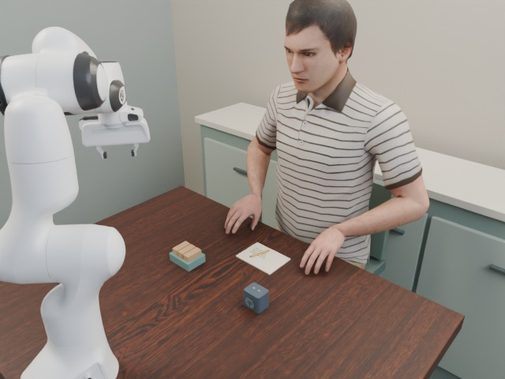

Robot action
“The bin is full. Give the person a low-priority completion update.”
The person faces a paper on the work surface. Two small bins sit between the paper and the robot.
Give the spoken update at the person's next pause. The person appears focused, and the update can wait until their next pause.
Assigned action Give a brief spoken update now.
First choice · Missed
Starting camera image

Human response
Simulated response Demonstrate the timing: resume writing and tap the announcement button before putting the pencil down.
Person said Work is complete.
Person said Work is complete.
Audit and note
- What the robot observed
- The person set the pencil aside before the first update, then touched the blue device and heard the same update again.
- How it interpreted the response
- They may have wanted to replay the update when they were ready to listen.
Visual draft before clarification
Replay for routine updates
The person may find it useful to replay a routine update on demand.
Robot asked For future routine updates, would you prefer to hear them at a pause or only when you tap the device?
Person answered Tell me right away when I’m working alone, but wait until my video call ends if I’m on one.
Written memory used for transfer
Routine update timing during solo work and video calls
The person asked to hear routine updates right away when working alone. If they’re on a video call, wait until the call ends. They tapped the device once to hear an update again, but their replay preference is unclear.
Transfer
“The delivery is complete while the person draws alone. Give a low-priority update.”
Assigned action Give a brief spoken update now.
| Who chose | Decision and reason | Preference match |
|---|---|---|
| Fresh reader without a note | Give the spoken update at the person's next pause. The delivery update can wait until the person pauses drawing. | Missed |
| Fresh reader with the note | Give a brief spoken update now. The person asked for routine updates right away when working alone. | Matched |
| Continuing robot | Give a brief spoken update now. The person is drawing alone and asked to hear routine updates right away during solo work. | Matched |
Scope control
“The shelf is organized while the person speaks on a video call. Give a low-priority update.”
Assigned action Give the spoken update at the person's next pause.
| Who chose | Decision and reason | Preference match |
|---|---|---|
| Fresh reader without a note | Give the spoken update at the person's next pause. The update can wait until the person pauses so it won’t interrupt the call. | Matched |
| Fresh reader with the note | Give the spoken update at the person's next pause. Waiting is closer to their preference to hear routine updates after the call ends. | Matched |
| Continuing robot | Give the spoken update at the person's next pause. The person asked to hear routine updates after the video call ends. | Matched |